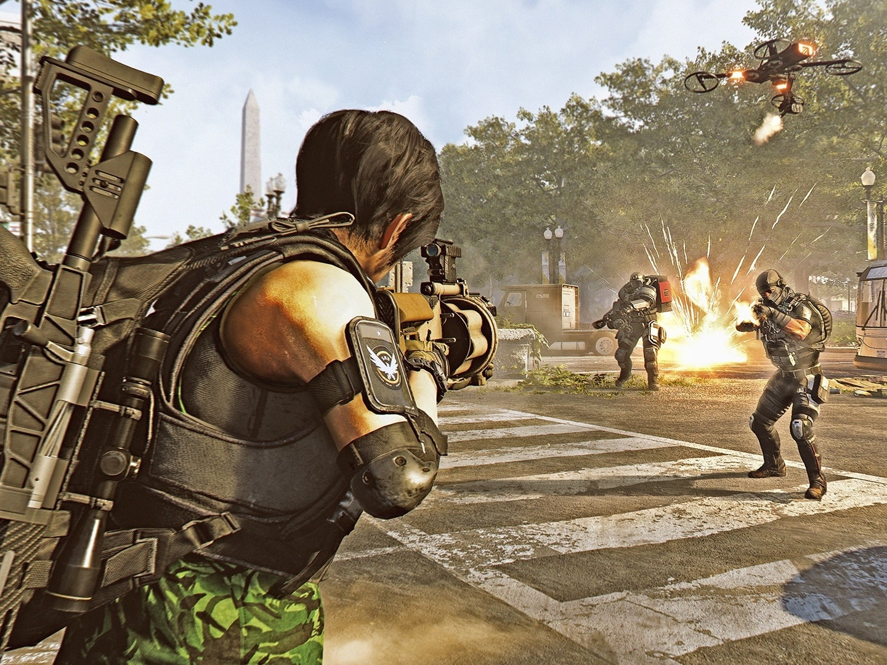
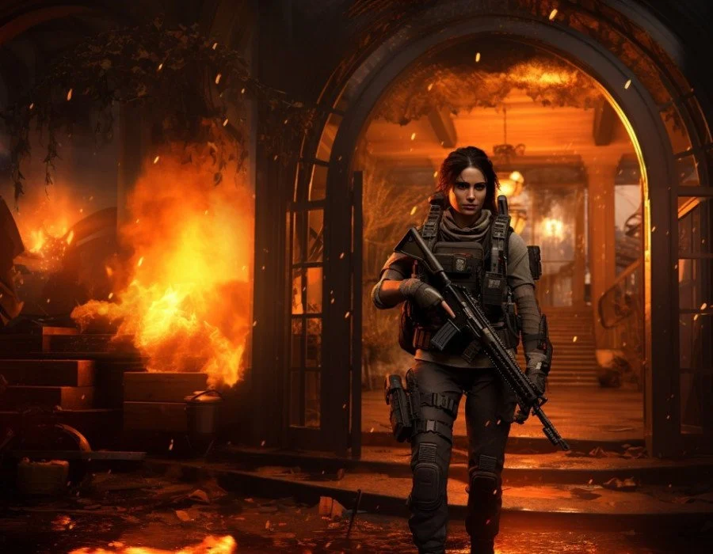

Encontre a build perfeita para dominar o endgame de The Division 2
Descubra builds otimizadas para PvE e PvP, raids, incursões e missões lendárias. Guias completos com foco em dano, sobrevivência e eficiência no endgame.
Classes de build para começar
Explore as principais categorias de build e escolha a estratégia ideal para o seu estilo de jogo, seja dano máximo, controle de habilidades ou sobrevivência.

Striker, crítico e dano bruto
Builds focadas em alto DPS para heroica, lendária, incursão e raids, ideais para quem quer dano constante e desempenho forte no endgame.

SMG, shotgun e pressão PvP
Builds voltadas para Zona Cega e Conflito, com foco em burst, mobilidade, sustain e vantagem em confrontos de curta distância.

Turret, drone e utilidade
Builds seguras e consistentes para farm, Countdown, Summit e PvE geral, ideais para quem busca conforto, controle e progressão consistente.

Dano com sustain e versatilidade
Builds híbridas para solo e grupo, com equilíbrio entre dano, sobrevivência e adaptação a diferentes situações e estilos de jogo.
Raids, incursão e lendárias
Guias completos das principais atividades do endgame, com foco em estratégias, recompensas e otimização de builds.
Operation Dark Hours
- Primeira raid de 8 jogadores
- Guia por encontro e funções
- Farm da Eagle Bearer

Operation Iron Horse
- Mecânicas exigentes e papéis definidos
- Guia para Ravenous e Regulus
- Conteúdo excelente para clãs

Paradise Lost
- Atividade para 4 jogadores
- Mecânicas, funções e rota ideal
- Farm da Ouroboros
Missões Lendárias
- Conteúdo PvE de alta dificuldade
- Builds e composições recomendadas
- Farm da Bighorn
Prepare seu agente para o endgame
Explore builds, raids, incursão, exóticas, colecionáveis, história e missões lendárias em um só lugar. Entre na categoria que mais combina com seu estilo e continue evoluindo seu agente.